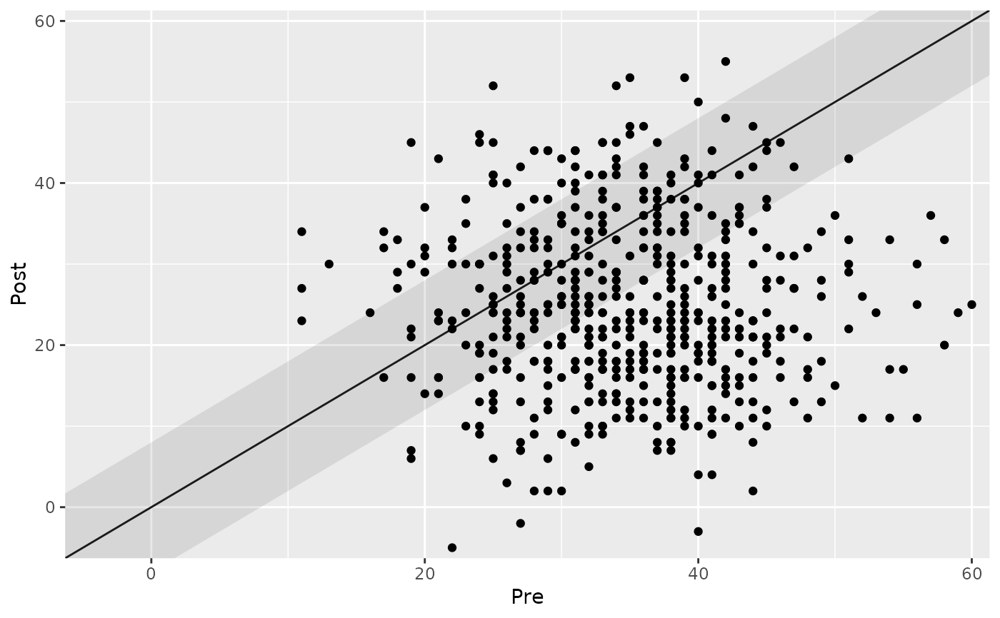
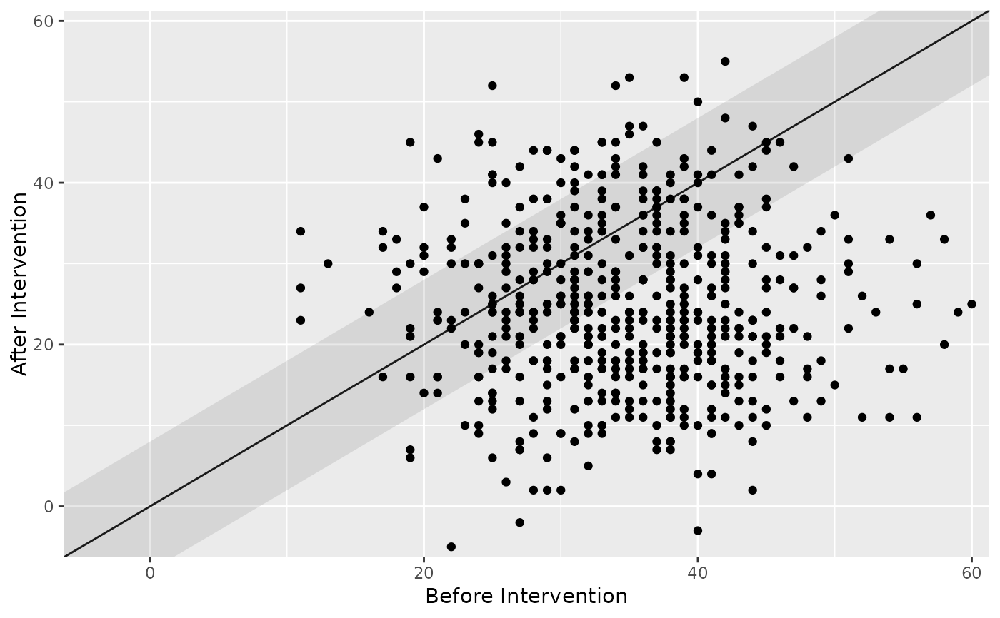
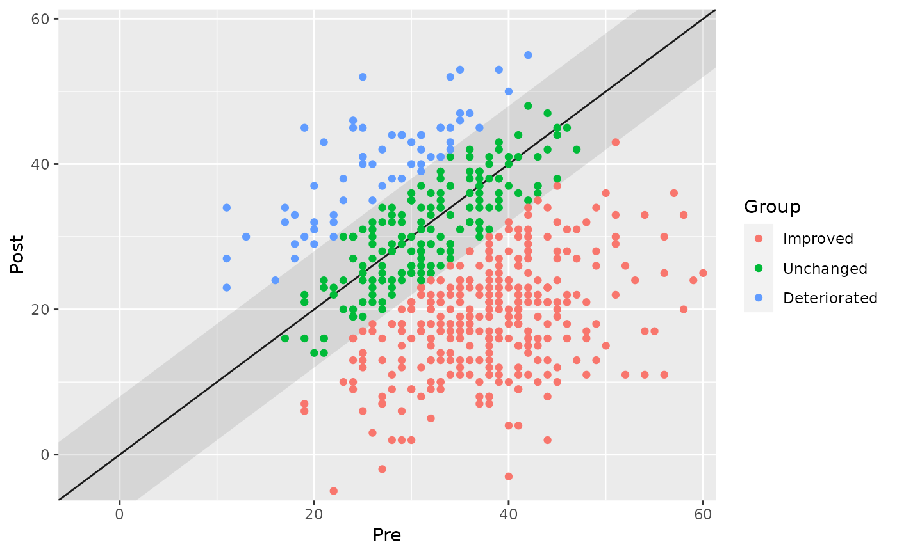
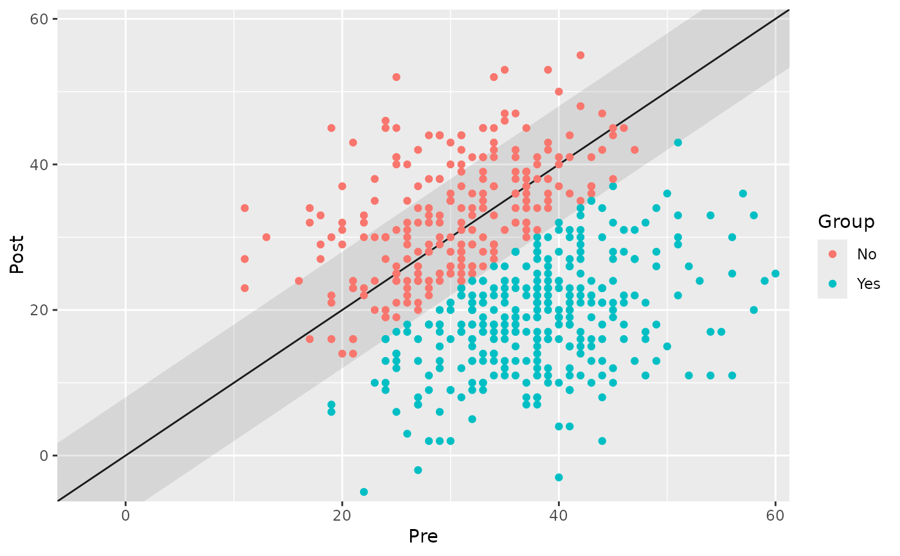
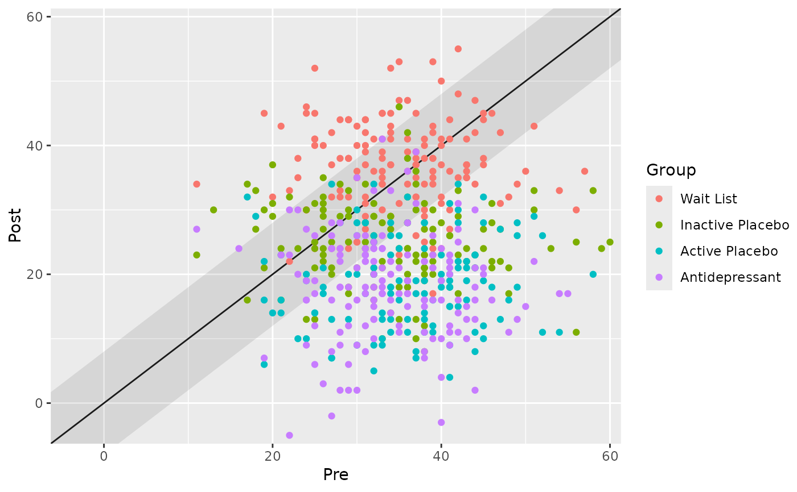
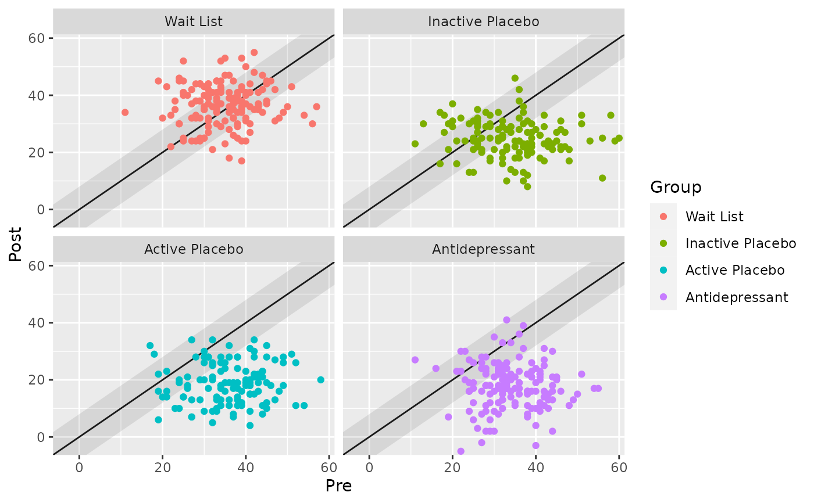
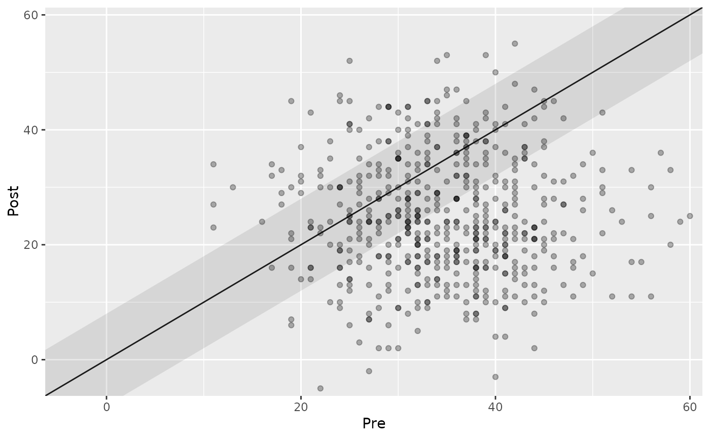
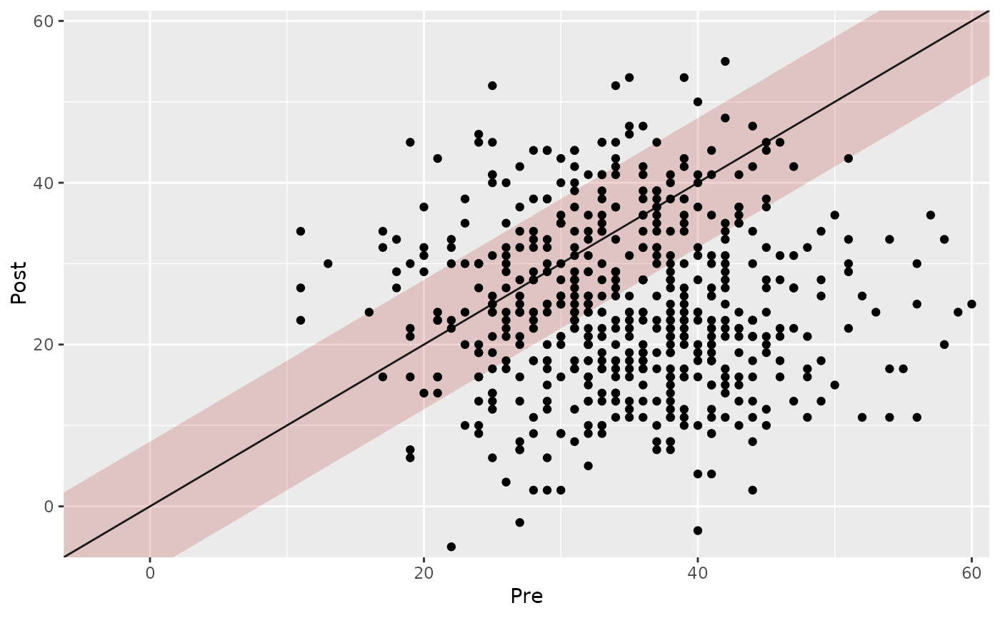
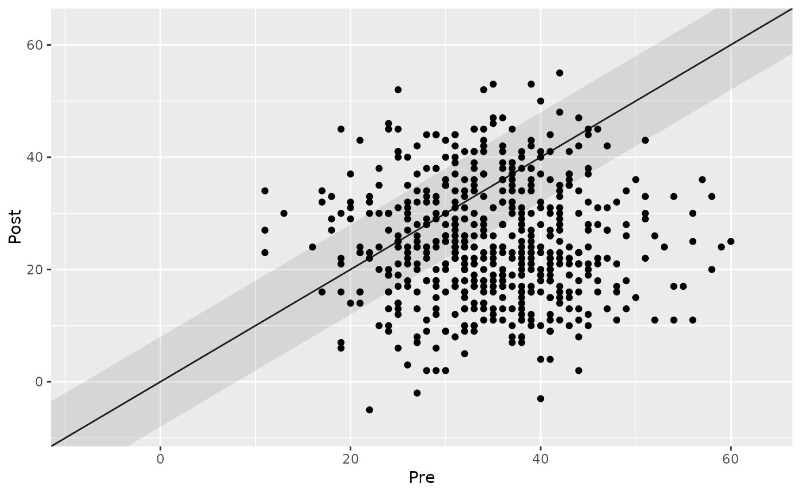
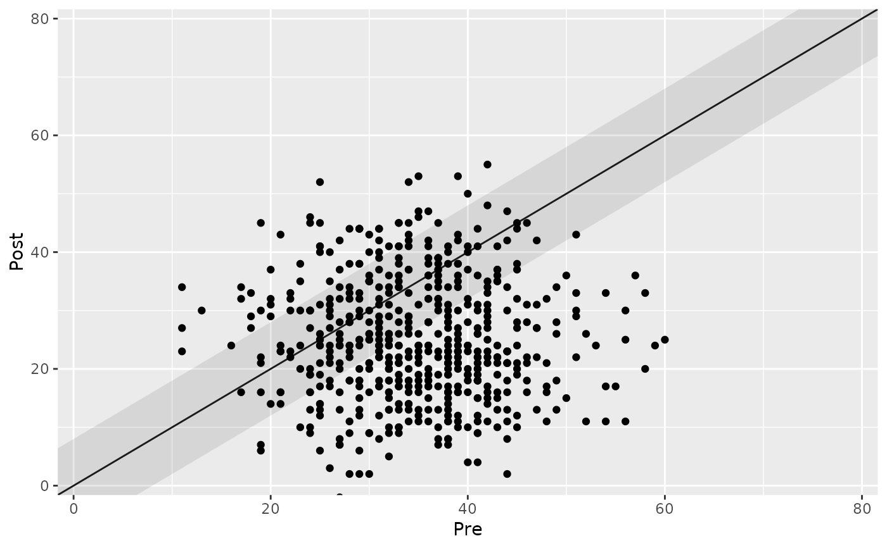

Plot an Object of Class cs_anchor_individual_within
Source:R/plot.R
plot.cs_anchor_individual_within.RdThis function creates a generic clinical significance plot by plotting the patients' pre intervention value on the x-axis and the post intervention score on the y-axis.
Usage
# S3 method for cs_anchor_individual_within
plot(
x,
x_lab = "Pre",
y_lab = "Post",
color_lab = "Group",
lower_limit,
upper_limit,
show,
point_alpha = 1,
mid_fill = "grey10",
mid_alpha = 0.1,
overplotting = 0.02,
...
)Arguments
- x
An object of class
cs_distribution- x_lab
String, x axis label. Default is
"Pre".- y_lab
String, x axis label. Default is
"Post".- color_lab
String, color label (if colors are displayed). Default is
"Group"- lower_limit
Numeric, lower plotting limit. Defaults to 2% smaller than minimum instrument score
- upper_limit
Numeric, upper plotting limit. Defaults to 2% larger than maximum instrument score
- show
Unquoted category name. You have several options to color different features. Available are
improved(shows improved participants)unchanged(shows unchanged participants)deteriorated(shows deteriorated participants)
- point_alpha
Numeric, transparency adjustment for points. A value between 0 and 1 where 1 corresponds to not transparent at all and 0 to fully transparent.
- mid_fill
String, a color (name or HEX code) for the percentage range fill
- mid_alpha
Numeric, controls the transparency of the percentage fill. This can be any value between 0 and 1, defaults to 0.1
- overplotting
Numeric, control amount of overplotting. Defaults to 0.02 (i.e., 2% of range between lower and upper limit).
- ...
Additional arguments
Examples
cs_results <- antidepressants |>
cs_anchor(
patient,
measurement,
pre = "Before",
mom_di,
mid_improvement = 8
)
# Plot the results "as is"
plot(cs_results)

# Change the axis labels
plot(cs_results, x_lab = "Before Intervention", y_lab = "After Intervention")

# Show the individual categories
plot(cs_results, show = category)

# Show a specific category
plot(cs_results, show = improved)

# Show groups as specified in the data
cs_results_grouped <- antidepressants |>
cs_anchor(
patient,
measurement,
pre = "Before",
mom_di,
mid_improvement = 8,
group = condition
)
plot(cs_results_grouped)

# To avoid overplotting, generic ggplot2 code can be used to facet the plot
library(ggplot2)
plot(cs_results_grouped) +
facet_wrap(~ group)

# Adjust the transparency of individual data points
plot(cs_results, point_alpha = 0.3)

# Adjust the fill and transparency of the "unchanged" (PCC) region
plot(cs_results, mid_fill = "firebrick", mid_alpha = 0.2)

# Control the overplotting
plot(cs_results, overplotting = 0.1)

# Or adjust the axis limits by hand
plot(cs_results, lower_limit = 0, upper_limit = 80)
